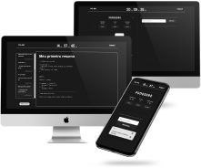

To-do Today Lista de tarefas com as principais funcionalidades para auxiliar em atividades acadêmicas, ideal para estudantes. Acessar source 
Weather App WebApp de previsões climáticas em tempo real, desde a temperatura, humidade, data da semana, entre outros.. Acessar source
Luminária livrolas Além de listar e recomendar livros trata-se de um ambiente de leitura virtual, clean e elegante. Deixando a leitura do usuário menos maçante. Acessar source
Landing Page To-do Landing page com efeitos de animações e parallax, promovendo a aplicação To-do Today Acessar
 1.png)